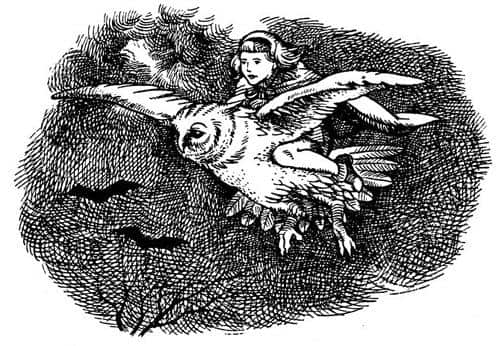
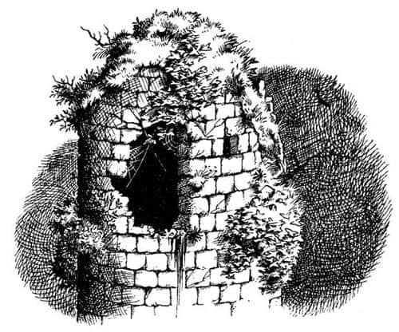
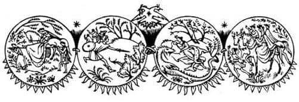

Baykuşlar Meclisi
Ne gariptir ki, ne kadar uykunuz varsa, yatağa girmeniz bir o kadar uzun sürer, hele ki odanızda bir şömine yanıyorsa. Ateşin önünde oturmadan önce Jill’in öyle uykusu vardı ki, elbiselerini bile çıkaramayacağını düşünüyordu. Oturduğundaysa bir daha kalkmak istemedi. Penceredeki tıkırtıyla irkildiğinde kendi kendine en az beş kere “yatmam gerekiyor” demişti.
Kalkıp perdeyi açtı ama karanlıktan başka bir şey göremedi. Sonra sıçrayarak geriye çekildi, çünkü çok büyük bir şey pencereye çarpmış ve bu sırada bir tıkırtı duyulmuştu. Hiç de hoş olmayan bir şey geldi aklına: “Bu ülkede dev güveler var galiba! Uff!” dedi. Ne var ki, aynı şey geri geldi; bu kez bir gaga gördüğüne ve o tıkırtıyı çıkaranın da gaga olduğuna emindi. “Kocaman bir kuş bu” diye düşündü Jill. “Bir kartal olabilir mi?” Bir kartal da olsa ziyaretçi istemiyordu; pencereyi açtı ve dışarıya baktı. Yaratık pır pır sesleriyle pervaza kondu; tüm pencereyi kaplayacak şekilde önünde duruyordu. Jill ona yer açabilmek için geri çekilmek zorunda kaldı. Bu Baykuş’tu.
“Şşş, şşş! Pu-huuu, pu-huuu” dedi Baykuş. “Ses çıkarma. Aslan’ın sizi görevlendirdiği doğru mu?”
“Kayıp prensi mi kastediyorsun?” dedi Jill. “Evet, bu doğru.” Aniden Aslan’ın sesini ve yüzünü hatırladı. Ziyafet çekip hikâyeler dinlerken Aslan’ı neredeyse tamamen unutmuştu.
“Mükemmel!” dedi Baykuş. “Öyleyse kaybedecek zamanımız yok. Hemen buradan uzaklaşmalısınız. Gidip diğerlerini uyandıracağım. Sonra dönerim. O saray elbiselerinden kurtulup yolculuk için daha uygun bir şeyler giyseniz iyi olur. Göz açıp kapayıncaya kadar dönerim. Pu-huu!” Cevap beklemeden gitti.
Eğer Jill maceralara alışık olsaydı Baykuş’un anlattıkları onu endişelendirebilirdi ama böyle bir şey aklının ucundan bile geçmedi. Gece yarısı kaçmanın verdiği heyecanla uykusu olduğunu bile unuttu. Kazağını ve şortunu yeniden giydi – şortunun kemerinde işine yarayabilecek bir rehber çakısı vardı – ve söğüt saçlı kız tarafından odaya bırakılanlardan birkaç şey daha aldı. Dizlerine kadar uzanan başlıklı bir pelerin (“yağmur yağdığında kullanabileceğim bir şey” diye düşünüyordu), birkaç mendil ve bir tarak seçmişti. Sonra oturup bekledi.
Baykuş döndüğünde yine uyuklamaya başlamıştı.
“Artık hazırız” dedi Baykuş.
“Yolu göstersen iyi olur” dedi Jill, “ben bu geçitleri bilmiyorum.”
“Pu-huu!” dedi Baykuş. “Kalede dolaşmayacağız. Bu işimize yaramaz. Sırtıma binmelisin. Uçacağız.”
“Ah!” dedi Jill. Bu fikirden hoşlanmamıştı; ağzı açık öylece kalakaldı. “Ben senin için ağır değil miyim?”
“Pu-huu, pu-huu! Aptallık etme. Diğerini götürdüm bile. Şimdi önce şu lambayı söndürelim.”
Lamba söner sönmez dışarısı biraz daha aydınlanmış gibi göründü; artık simsiyah değil, griydi. Baykuş arkası dönük pencerede durdu ve kanatlarını açtı. Jill, onun kısa ve şişman gövdesine tırmanıp dizlerini kanatlarının altına sokarak sımsıkı tutundu. Tüyler sıcacık ve yumuşaktı, ama tutunacak herhangi bir şey yoktu. “Scrubb’ın bundan hoşlanıp hoşlanmadığını merak ediyorum!” diye düşündü Jill. Tam o sırada ani bir hareketle aşağıya doğru süzülerek pencereden uzaklaştılar. Kanatlar kulaklarının dibinde çırpıyor, gecenin serin ve nemli havası yüzüne çarpıyordu.
Hava umduğundan daha aydınlıktı; bulutlu olmasına rağmen, bulutların arasından gümüş rengi ayın bir kısmı görünüyordu. Altındaki tarlalar gri, ağaçlar siyah görünüyordu. Yakında yağmur yağacağına işaret eden, sessiz ama kulaklarda hışırdayan bir rüzgâr vardı.
Baykuş havada bir çember çizdiğinden kale artık önlerindeydi. Odaların çok azında ışık vardı. Nehri geçerek kuzeye doğru uçtular. Hava giderek soğudu. Jill altındaki sularda Baykuş’un yansımasını gördüğünü düşünüyordu. Çok geçmeden nehrin kuzey kıyılarına varıp ormanlık alanların üzerinde uçmaya başladılar.
Baykuş gagasıyla, Jill’in göremediği bir şey kaptı.
“Ah, lütfen yapma” dedi Jill. “Böyle sarsılma. Beni az daha düşürüyordun.”

“Özür dilerim” dedi Baykuş. “Bir yarasa yakalıyordum. Bir baykuşun karnını doyurması için şöyle tombulca bir yarasadan daha iyisi yoktur. Senin için de bir tane yakalayayım mı?”
“Hayır, teşekkür ederim” dedi Jill ürpertiyle.
Artık daha alçaktan uçuyorlardı. Hayal meyal seçilen büyük ve siyah bir şey onlara doğru yaklaşıyordu. Jill bunun üzeri sarmaşıkla kaplı, kısmen harap olmuş bir kule olduğunu düşünüyordu. Kuleyi tam zamanında fark etmişti. Baykuş üzerinde Jill ile, sarmaşıklı ve örümcek ağlı delikten geçerek serin ve gri geceden kulenin tepesindeki karanlık yere zorlukla girerken, Jill pencerenin çerçevesine çarpmamak için eğilmek zorunda kaldı. İçerisi küf kokuyordu, baykuşun sırtından iner inmez bulunduğu yerin oldukça kalabalık olduğunu fark etmişti. Karanlıkta her yönden “Pu-huu! Pu-huuu” sesleri gelmeye başladığında kalabalığı baykuşların oluşturduğunu anlamıştı. Çok değişik bir ses, “Sen misin Pole?” dediğinde içi rahatladı.

“Sen misin Scrubb?” diye sordu Jill.
“Artık” dedi Bay Pasparlak, “hepimiz hazırız sanırım. Baykuşlar meclisini açalım.”
“Pu-huuu, pu-huuu. Doğrusu bu. Yapılacak doğru şey bu” dedi çeşitli sesler.
“Bir dakika” dedi Scrubb. “Benim söyleyecek bir şeyim var.”
“Söyle, söyle, söyle” dedi baykuşlar ve Jill, “Haydi başla” dedi.
“Sanırım siz delikanlılar – yani baykuşlar” dedi Scrubb, “Kral X. Caspian’ın gençlik günlerinde Dünyanın Sonu’na gittiğini biliyorsunuzdur. Şey, o yolculukta ben onunla beraberdim; onunla ve Fare Bastıbacak’la, Lord Drinian’la ve hepsiyle beraberdim. Biliyorum inanılır gibi değil, ama insanlar bizim dünyamızda sizinkiyle aynı hızda yaşlanmıyorlar. Söylemek istediğim şu; ben Kral’ın adamıyım ve bu baykuşlar meclisi Kral’a yapılan bir komplo hareketiyse sizinle hiç işim olmaz.”
“Pu-huuu, pu-huuu, biz de Kral’ın baykuşlarıyız” dedi baykuşlar.
“Öyleyse amacınız nedir?” dedi Scrubb.
“Sadece şu” dedi Bay Pasparlak. “Eğer Lord Naip, yani Cüce Yaygaracı sizin kayıp prensi aramaya çıkacağınızı duyarsa gitmenize izin vermez. Sizi hemen odanıza kilitleyecektir.”
“Ulu Tanrım!” dedi Scrubb. “Yaygaracı’nın bir hain olduğunu mu söylüyorsunuz? Denizdeyken onun hakkında birçok şey duymuştum. Caspian’ın – yani Kral’ın – ona güveni tamdı.”
“Ah, hayır” dedi bir ses. “Yaygaracı hain değildir. Ancak otuzdan fazla kahraman (şövalyeler, Sentorlar, iyi devler ve her türden yaratıklar) zaman zaman kayıp prensi aramaya çıktı ve hiçbiri dönmedi. Sonunda Kral, oğlunu aramak için bütün cesur Narnialıların ölmesine göz yummayacağını söyledi. Artık kimsenin gitmesine izin verilmiyor.”
“Eminim bizim gitmemize izin verirdi” dedi Scrubb. “Kim olduğumu ve beni kimin gönderdiğini bir duysun.”
“Bizi kimin gönderdiğini” diye araya girdi Jill.
“Evet” dedi Pasparlak, “büyük bir olasılıkla izin verirdi. Ancak Kral uzaklarda ve Yaygaracı kuralları harfiyen uygulayacaktır. Çelik kadar sert, bir dağ kadar sağırdır o. Ayrıca çabuk parlayan biridir. Bunun özel bir durum olduğunu anlatamazsınız ona.”
“Bizi birazcık olsun dinleyeceğini düşünebilirsiniz, çünkü biz baykuşuz ve herkes baykuşların ne kadar akıllı olduğunu bilir” dedi bir başkası. “Ancak artık o kadar yaşlandı ki, tek söyleyeceği, ‘Sen sadece bir civcivsin. Ben senin yumurta olduğun zamanları bilirim. Bana ders vermeye kalkmayın, efendim. Yengeçler ve tatlılar!’ olacaktır.”
Bu baykuş, Yaygaracı’nın sesini iyi taklit etmişti, her taraftan baykuşça gülme sesleri duyuldu. Çocuklar, Narnialıların Yaygaracı’yı, okulda herkesin biraz korktuğu, dalga geçtiği ama aslında kimsenin nefret etmediği aksi bir öğretmen gibi gördüklerini anlamaya başlamıştı.
“Kral ne zaman dönecek?” diye sordu Scrubb.
“Kendisi bile bilmiyor!” dedi Pasparlak. “Son zamanlarda Aslan’ın adalarda – sanırım Terebinthia’da – görüldüğü söylentileri vardı. Kral, ölmeden önce Aslan’la yüz yüze görüşmek ve ondan sonra kimin kral olacağını sormak üzere bir girişimde daha bulunacağını söyledi. Ancak hepimiz eğer Aslan’ı Terebinthia’da bulamazsa doğuya, Yedi Adalar’a, Issız Adalar’a, hatta daha ileriye gideceğinden korkuyoruz. Bu konuda hiç konuşmaz, ama Dünyanın Sonu’na yaptığı yolculuğu asla unutmadığını hepimiz biliyoruz. Oraya tekrar gitmeyi içten içe arzuladığından eminim.”
“O zaman onun dönmesini beklemenin yararı yok” dedi Jill.
“Hayır, yararı yok” dedi Baykuş. “Ah, ne biçim iş! Keşke onunla hemen konuşsaydınız! Her şeyi ayarlardı. Kayıp prensi aramanız için yanınıza bir ordu verirdi.”
Jill hiç sesini çıkarmadı ve Scrubb’ın bunun neden gerçekleşmediğini tüm baykuşlara söylemeyecek kadar centilmen olmasını umut etti. Scrubb tam olmasa da centilmence davrandı. Çünkü dilinin altından, “Eh, benim hatam değildi ki” demişti ve sonra da yüksek sesle:
“Pekâlâ. Ordusuz yapmamız gerekecek. Ancak bilmek istediğim bir şey daha var. Sizin bu baykuşlar meclisi dediğiniz şey kurallara uygunsa, meşruysa ve kimseye zarar vermek istemiyorsa neden bu kadar gizli olmak zorunda? Gecenin köründe bir harabede toplanmak ve tüm bu gizlilik niye?”
“Pu-huuu! Pu-huuu” diye ötüştü bir sürü baykuş. “Nerede toplanalım? Kim geceden başka bir zamanda toplanır ki?”
“Görüyorsunuz ki” dedi Pasparlak, “Narnia’daki yaratıkların birçoğunun böyle doğal olmayan huyları vardır. İşlerini herkesin uyuması gereken saatlerde, gündüzleri, parlak günışığında (uf!) yaparlar. Yani geceleyin o kadar kör ve aptallar ki, ağızlarından tek kelime alamazsın. Bu yüzden biz baykuşlar bir şeyler hakkında konuşmak istediğimizde, akla uygun saatlerde, kendi aramızda toplanma alışkanlığı edindik.”
“Anlıyorum” dedi Scrubb. “Pekâlâ öyleyse. Devam edelim. Bize kayıp prensi anlatın.” Hikâyeyi anlatan Bay Pasparlak değil, yaşlı bir baykuştu.
Yaklaşık on yıl önce, Caspian’ın oğlu Rilian çok genç bir şövalyeyken, bir mayıs sabahı annesi kraliçeyle birlikte Narnia’nın kuzey kısımlarına doğru yola çıkmıştı. Beraberlerinde birçok toprak beyi ile kadınlar vardı ve hepsi de başlarına yeşil yapraklardan yapılmış taçlar, taçların yanlarına da boynuzlar takmıştı. Yanlarında tek bir köpek yoktu, çünkü ava değil bahar bayramını kutlamaya çıkmışlardı. Hava kararmadan, yerden serin bir pınarın kaynadığı bir açıklığa geldiler. Hayvanlarından inerek yiyip içtiler, hepsi çok mutluydu. Bir süre sonra kraliçenin uykusu geldi ve yatması için çimenlerin üzerine pelerinlerini serdiler. Prens Rilian ve diğerleri, anlattıkları hikâyeler ve kahkahalarının sesi kraliçeyi rahatsız etmesin diye biraz uzaklaştılar. Sonra sık ağaçlıklı ormandan büyük bir yılan çıktı ve kraliçenin elini ısırdı. Herkes attığı çığlığı duyup ona doğru koştu, yanına ulaşan ilk kişi Rilian’dı. Yılanın uzaklaştığını görmüştü ve kılıcını çekerek peşine takıldı. Çok büyük, parlak ve zehir gibi yemyeşildi. Bu yüzden onu rahatlıkla görebiliyordu. Ama sonra yılan sık çalılıkların ardında kayboldu ve Prens oraya giremedi. Böylece annesinin yanına döndü ve herkesi onunla ilgilenirken buldu. Ancak boşuna uğraşıyorlardı, Rilian annesinin yüzüne baktığında, dünyadaki hiçbir doktorun artık ona faydası dokunamayacağını anlamıştı. Canı hâlâ bedenindeyken, ona bir şey söylemeye çalıştığı belliydi, ama konuşamıyordu, söylemek istediği her neyse, söyleyemeden öldü. Çığlığını duydukları andan öldüğü ana kadar on dakika bile geçmemişti.
Ölü kraliçeyi Cair Paravel’e taşıdılar. Rilian, Kral ve tüm Narnia acı içinde yas tuttu. Muhteşem bir kadındı; bilge, kibar ve mutluydu. Caspian’ın dünyanın doğu kenarından Narnia’ya getirdiği gelindi o. İnsanlar, damarlarında yıldızların kanının aktığını söylerdi.

Annesinin ölümü, tahmin edilebileceği gibi Prens’i yıkmıştı. Bundan sonra o zehirli yılanı bulup öldürmek ve intikam almak için sürekli Narnia’nın kuzey sınırlarına gidiyordu. Kimse bunun hakkında tek kelime etmezdi, ama Prens bu yolculuklardan yorgun ve çılgına dönmüş bir halde dönerdi. Kraliçe’nin ölümünden yaklaşık bir ay sonra, bazıları onda bir değişiklik gördüklerini söylemeye başladı. Gözlerinde yeni uyanmış bir adamın bakışları vardı ve tüm gün dışarıda olmasına rağmen atı yorgun görünmüyordu. Yaşlı saraylılar arasındaki en iyi dostu, dünyanın doğu kısımlarına yaptıkları büyük yolculukta babasının kaptanı olan Lord Drinian’dı.
Bir akşam Drinian Prens’e, “Ekselansları yılanı aramaktan vazgeçmeli. Akılsız bir hayvandan intikam almak imkânsızdır, o bir insan değil ki. Boşa yoruyorsun kendini” dedi.
Prens, “Lordum, şu son yedi gündür yılanı neredeyse unutmuştum” diye cevapladı. Buna karşılık neden sürekli Kuzey Ormanları’na gittiğini sordu Drinian. “Lordum” dedi Prens, “orada şimdiye kadar yaratılmış en güzel şeyi gördüm.”
“Güzel Prens” dedi Drinian, “müsaadenizle yarın sizinle geleyim ve ben de göreyim bu güzel şeyi.”
“Tanrı’nın izniyle” dedi Rilian.
Ertesi gün erkenden atlarını eyerleyip dörtnala Kuzey Ormanları’na gittiler ve Kraliçe’nin öldüğü pınarda konakladılar. Drinian, konaklamak için Prens’in birçok yer arasından burayı seçmesini garip bulmuştu. Öğlene kadar orada dinlendiler ve öğlen olduğunda Drinian, hayatında gördüğü en güzel kadını gördü. Kadın pınarın kuzey tarafında duruyor ve hiç konuşmuyordu, ama sanki yanına gelmesini istiyormuş gibi eliyle Prens’e işaret ediyordu. Uzun boylu ve mükemmeldi, parlak ve zehir gibi yemyeşil ince bir giysisi vardı. Prens ona aklını kaybetmiş bir adam gibi bakıyordu. Ne var ki, kadın aniden kayboldu, Drinian nereye gittiğini bilmiyordu. Cair Paravel’e geri döndüler. Drinian, parlak yeşil kadının şeytani biri olduğunu düşünüyordu.
Drinian bu macerayı Kral’a anlatıp anlatmaması gerektiğini çok düşündü, ama gevezelik etmeye pek niyeti olmadığından dilini tuttu. Ancak sonradan, söylememiş olduğuna çok pişman oldu. Çünkü ertesi gün Prens Rilian yalnız başına gitti. O gece geri dönmedi; o saatten sonra ne Narnia’da ne de komşu ülkelerde izine rastlandı. Ne atı, ne pelerini, ne şapkası, ne de başka bir özel eşyası bulundu. Drinian kalbindeki acıyla Caspian’a gitti ve “Kralım, bu haini öldürün. Sessiz kaldığım için oğlunuzun mahvına neden oldum” dedi ve hikâyeyi anlattı. Caspian savaş baltasını kapıp öldürmek için Lord Drinian’a saldırdı, Drinian bir hayvan gibi sessizce öldürücü darbeyi bekliyordu. Ancak baltayı kaldırdıktan sonra Caspian aniden onu kenara itip, “Kraliçemi ve oğlumu kaybettim. Dostumu da mı kaybedeyim?” diye bağırdı. Drinian’ın boynuna sarıldı, kucaklaştılar ve ikisi de ağladı. Dostlukları bozulmamıştı.
Rilian’ın hikâyesi buydu. Jill, “Bahse girerim o yılan ve kadın aynı kişiydi” dedi.
“Doğru, doğru, biz de senin gibi düşünüyoruz” dedi baykuşlar.
“Ama Prens’i öldürdüğünü sanmıyoruz” dedi Pasparlak, “çünkü hiç kemik—”
“Biz öldürmediğini biliyoruz” dedi Scrubb. “Aslan, Pole’a bir yerlerde hâlâ yaşadığını söylemiş.”
“Bu her şeyi daha da kötüleştiriyor” dedi en yaşlı baykuş. “Prens’e istediği her şeyi yaptırabiliyor demek ki, bu da Narnia’ya karşı korkunç bir entrika planladığı anlamına geliyor. Çok, çok uzun zaman önce Narnia’nın başlangıcında kuzeyden bir Beyaz Cadı gelmiş ve ülkemizi yüz yıl boyunca kar ve buzlarla örtmüştü. Tabii biz, bu olanların da onun işi olduğunu düşünüyoruz.”
“Pekâlâ” dedi Scrubb. “Pole ve ben Prens’i bulmalıyız. Bize yardım edebilir misiniz?”
“Elinizde bir ipucu var mı?” diye sordu Pasparlak.
“Evet” dedi Scrubb. “Kuzeye gitmemiz ve Devler Şehri’nin kalıntılarına ulaşmamız gerektiğini biliyoruz.”
Tüm baykuşlar her zamankinden daha çok ses çıkararak ötmeye, ayaklarını oynatıp tüylerini kabartmaya başladı. Her kafadan bir ses çıkıyordu. Çocuklarla birlikte kayıp Prens’i aramaya gidemeyeceklerinden dolayı ne kadar üzgün olduklarını söylüyorlardı. “Siz gündüzleri, biz ise geceleri yolculuk yapmak isteriz” dediler. “Bu işe yaramaz, işe yaramaz.” Bazıları, artık havanın toplantıya başladıklarındaki kadar karanlık olmadığını ve meclisin oldukça uzun sürdüğünü söyledi. Aslında, Devler Şehri’nin kalıntılarına yapılacak bir yolculuğun lafı bile o kuşların heveslerini söndürmüştü. Pasparlak: “O yöne doğru – Yüksek Ova’ya – gitmek istiyorlarsa, onları Kıllıkıpırdak’lardan birine götürmeliyiz. Bir tek onlar yardım edebilir” dedi.
“Doğru, doğru. Götür” dedi baykuşlar.
“Gelin öyleyse” dedi Pasparlak. “Birini ben götürürüm. Diğerini kim götürecek? Bu gece halletmeliyiz bu işi.”
“Ben götürürüm. Ama sadece Kıllıkıpırdak’lara kadar” dedi bir baykuş.
“Hazır mısın?” dedi Pasparlak, Jill’e.
“Sanırım Pole uyudu” dedi Scrubb.